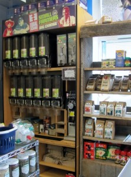
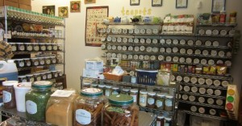
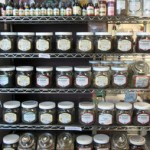

Bulk Items
Bulk Coffee
Eats carries certified organic whole bean coffee in bulk from Equal Exchange and pre-packaged coffee from Red Rooster Roasters in Floyd, VA and Dark Hollow Roasters in Sugar Grove, VA. Our coffee is shipped weekly to keep supplies fresh, and our coffee of the day is brewed fresh each morning for you to sample. We also have grinders if you would like to grind your coffee in-store.
Bulk Culinary Spices, Teas, and Medicinal Herbs
Here at Eats Natural Foods, we offer over 100 culinary herbs and spices, from whole anise stars to mixes such as onion soup/dip powder. You name it, we probably have it. Need a medicinal herb, but want try it before getting a larger amount? Well, we have over 50 herbs in powder and cut and sifted form for you to explore. We also have the traditional and herbal teas you're looking for, such as Jasmine, Rooibos, English Breakfast, and over 40 more, to delight your morning routine. Selling in bulk enables us to provide you with the freshest ingredients while allowing you the flexibility to get as little or much as you need at an affordable price. Spice up your life at Eats!
 